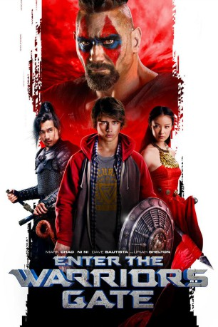

#7050 The Warriors Gate
 
 IMDB-Wertung: 5.3 / 10
IMDB-Wertung: 5.3 / 10  Metascore: 0
Metascore: 0 
Jack ist ein Teeanger wie viele anders. Am liebsten verliert sich Stunden lang in Videogames, die er beherrscht wie kaum ein anderer. Zufällig stößt er in der Garage auf eine geheimnisvolle Kiste, die er in sein Zimmer mitnimmt. Dort öffnet sie sich auf magische Weise und transportiert ihn in ein antikes Reich, das ihn an seine Lieblingsspiele erinnert. Dort übt ein grausamer König eine Schreckensherrschaft auf, die Menschen zittern vor ihm. Mit seinem Können als Gamer erweist sich Jack bald als ebenbürtiger Gegner.
Jahr: 2016
Dauer: 105 Minuten
FSK: 12
Land: Frankreich Studio: Cathay-Keris FilmsTonspuren: DD2.0 - ,
Untertitel:
Auflösung: 1080p (1920x800) Größe: 8304 MB
Genre: Action, Abenteuer, Fantasy
Regisseur: Matthias Hoene
Drehbuch: Luc Besson
Soundtrack:
Darsteller:
- Mark Chao als Zhoo
- Ni Ni als Su Lin
 Dave Bautista als Arun
Dave Bautista als Arun Sienna Guillory als Annie
Sienna Guillory als Annie- Uriah Shelton als Jack
- Francis Ng als Wizard
- Ming Xi als Nymph #1
- Kara Hui als Mountain Spirit
 Ron Smoorenburg als Black Knight
Ron Smoorenburg als Black Knight- Dakota Daulby als Travis Leigh
 Joel Adrian als Viking Barbarians
Joel Adrian als Viking Barbarians- Eva Day als Sales Girl
 Byron Gibson als Viking Barbarians
Byron Gibson als Viking Barbarians David Torok als Viking Barbarians
David Torok als Viking Barbarians- Zha Ka als Brutus
- Tianyi You als Nymph #2
- Lijie Liu als Nymph #3
- Luke Mac Davis als Hector
- Yilin Guan als Messenger #1
- Xiaochuan Li als Messenger #2
- Tao Chen als Treasurer
- David Liu als Tailor
- Fei Huang als Priest / Shaman
- Svitlana Zavialova als Viking Barbarians
Datei: X:\2016(N-Z)\Warriors Gate, The (2016, FSK12, 1920x800).mkv seit 20.09.2017
Festplatte: HD 2016(A-Z)
 Es gibt insgesamt 182 Filme in der Gruppe '2016(N-Z)'
Es gibt insgesamt 182 Filme in der Gruppe '2016(N-Z)'